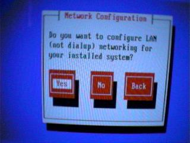
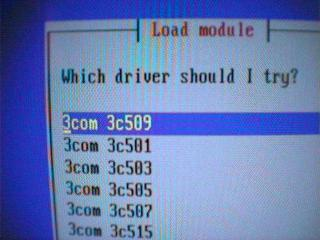
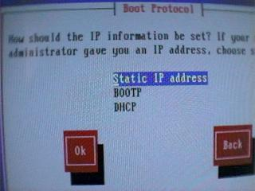
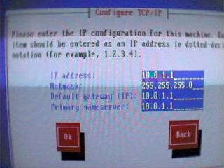
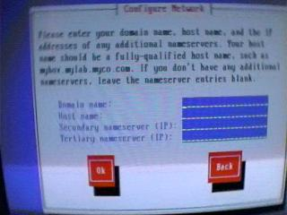
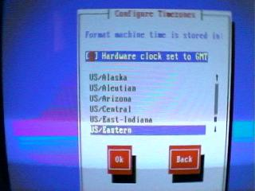
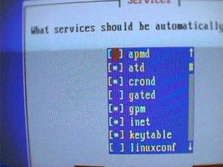
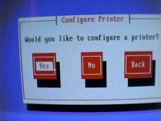
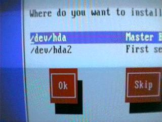
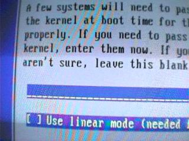

Lesson 3: Installing Red Hat Linux - Part 2
To complete your installation of Red Hat Linux 6.0 you will need to provide the installation program with some basic configuration options. The default Red Hat Linux installation program will ask you to configure the following:
Mouse
Network device and settings
Time Zone
Startup services
Printer
Root Password
Lilo
We will now continue the walk through by looking at the configuration options.
Figure 2.1: Mouse Configuration
Linux should automatically detect most serial mice and bus mice, unless your system has underlying hardware problems, such as IRQ or IO address conflicts. You will see that Linux will also report the type of Mouse detected and which port it found the mouse on.
/dev/ttyS00 Com 1
/dev/ttyS01 Com 2
Linux devices will be discussed in detail in the next lesson. Linux devices are stored in /dev. The ttyS indicates that it is a serial terminal device, and 00 indicates that it is the first serial terminal (com port) device on the system.
If Linux doesn't detect your mouse, don't worry for now, later lessons will show you how to troubleshoot hardware conflicts and reconfigure devices. You can modify the configuration then.

Figure 2.2: Network Configuration
Network configuration is probably the most complex part of the installation,
after disk partitioning. If you are configuring a stand-alone system, or a system that does not have a network card in it, then choose NO. Otherwise, select YES.
Next you will be presented with a list of drivers to choose from. It is important to remember that not all network adapters are supported by the Red Hat Linux installation. This does not mean that it is not supported by Linux. We recommend that you use the 3com 3c509 series of ISA network cards, Netgear PCI network adapters or a generic NE2000 compatible card for the best results. Some cards, like the Netgear are supported through the chipset on the card itself, your card maybe supported because of the chipset on the board itself. The best method of determining what type of chipset is on the network adapter is to visually inspect it. 3com cards are always a safe bet however. If you are using an ISA card, be sure to have the IRQ and IO addresses available in case the auto-detection fails.
Once you select the drive you will be asked to autoprobe or manually enter the card's IO and IRQ parameters. Some cards cannot be autoprobed, if you have such a card in your system then you will simply be prompted to enter the values. If your card autoprobes correctly you will be asked to choose how to select the card's IP address.
There are three methods of choosing how to determine your systems IP address. You can provide a static IP address, use BOOTP or DHCP. Providing a static IP address is the most common method. The IP address can either be obtained from an ISP provided subnet, or you can use one of the private reserved subnets. Do not make up IP addresses!!!
The best method is to use reserved subnets, you can use 10.0.0.0/8 or192.168.0.0/16. These will give you a class A or a Class B of address space. If you need to use a network, choose 10.0.1.0/24 as your primary network. This will give you from 10.0.1.1 to 10.0.1.254. If you are connecting a network to the internet you should give your router or Linux server (if it is being used as a gateway/firewall) the 10.0.1.1 address, and start addressing your workstations from 10.0.1.10, leaving the space prior to .10 open for additional servers. Once you have determined your network addressing scheme, select Static IP address.
BOOTP and DHCP are both network protocols for automatically assigning IP addresses to workstations, either on a first-available or MAC address (ethernet hardware address) specified. You can use Linux to act as a BOOTP or DHCP server. These protocols are handy for disk-less workstations or systems that do not require a static IP address, such as computers in a computer lab. If you do not have a BOOTP or DHCP server, then use the static IP option.
To complete the IP configuration you will need to provide Linux with some information, BOOTP and DHCP options do not require this information as the server provides it.
First you will need to give the system an IP address, as mentioned above. Your instructor may provide you with an IP address, and discuss some IP basics. Please direct any questions to your instructor.
For the purpose of this lesson, we will use the IP of 10.0.1.1. Since we have a small network, we will be using a single Class C (254 addresses). This is achieved by using the subnet mask. Here the subnet mask for a Class C is255.255.255.0.
The default gateway should be the address of your gateway or router. In this case the Linux box is going to be the primary gateway for the network, your instructor may request a different value.
Finally you will be asked for the Primary Name Server. This is the primary dns server. If you plan on using a caching name server on your Linux box, you can specify the IP on the Linux server, otherwise use your ISP's DNS server.

Figure 2.3: Hostname and DNS settings
You will then be asked for the domain name, this is mycompany.com or something similar. For example mialtd.net, make sure that this domain is registered with the appropriate registry.
Next you will be asked for the hostname. You should probably use a common naming structure for systems on your network. For example, workstation-1-5, could be used to designate the 5th workstation in computer lab 1. In our example we were configuring our internet gateway, so we called it mni-core0. This was derived from the first letters from mialtd.net, I for internet and since this was our primary core router, we named it core0.
If you wish to backup your caching name server, for example if it was taken down, you can enter your ISP's or other internal dns servers. Remember to use IP and not hostnames!!

Figure 2.4: Time Zone
To configure the time zone, you simply need to select the region in which you are located, or select GMT. If you clock is set to GMT in the bios, select that option in addition to selecting your time-zone.

Figure 2.5: Startup Services
Generally it is a good idea to install the latest versions of servers, to make sure that you are running a secure version. If you decided on that option, then you should deselect the services you plan on upgrading later. You will want services such as inet (which controls basic tcp services like telnet, ftp etc), keytable and gpm to load on startup. Services like advanced power management and others which you may not intend on using should most likely be disabled. You can use the F1 for help option to learn about each service, we recommend you spend some time and explore each service.

Figure 2.6: Printer Services
You should consult with your instructor on whether or not printer services will be configured. The instructor may opt to configure a shared network printer or choose to skip the printer configuration completely. Printers are easily setup under Linux with some exceptions. In recent years several manufacturers have produced “intelligent” printers that have key elements controlled by software. A good example is the HP DeskJet 720C. These printers come with Windows drivers which use a particular language to transmit information to the printer. Since no Linux drivers come with the printer you need to install a separate package. This is not the case for all DeskJet printers, the HP600 series and certain HP800 series don't have any problems at all. If you are using a software driven printer, you should use a separate package called pbm2ppa. You can find this by searching www.freshmeat.net. This package comes with instructions on plugging straight into the standard Red Hat Linux printtool or regular Linux lpd services.
Figure 2.7: Root Password
This is one of the most important sections of the install. Here you will specify the root or administrator password. This is the ONLY user account that is created by the install, without it you will need to build a rescue disk. So take care!!
Simply enter a password, re-enter the same password on the next line and continue.
Note about Root Passwords
Root passwords should be a combination of numbers, letters and shift+number characters. There are some easy rules to use for passwords in general.
Always use a combination of numbers and letters.
Choose a password that is not easily related to you (ie. Not your birthday)
Replace O with zeros
Replace E with 3
Replace S with $
Some people like to pick a phrase and use the first or last letters of it.
For example you could pick a phrase such as The brown cow smokes cigars and eats grass. Then pick your password by using the first characters tbcscaeg. Now replace the letters with numbers, S with $, E with 3. This turns your password into tbc$ca3g. Now replace the a (for and) with an ampersand &. This turns the password into tbc$c&3g. If you want you could choose to capitalise a few letters as well. While this may seem extreme, the root password is not something you want to be easily guessed. You can change the password at a later stage with the passed command.

Figure 2.8: Configuring Lilo
Finally you need to configure LILO. LILO is a Linux boot loader that is read from your master boot record. LILO can be used to boot various other operating systems on a dual boot system. LILO uses labels (words) to boot different operating systems, (ie. Win for windows, Linux for Linux), it allows you to store multiple Linux kernels on your system, and boot into different ones on startup. This is handy if you wish to compile a development kernel (eg. 2.3.15) to test out experimental Linux features without effecting your stable production Linux kernel.
To configure LILO with the Red Hat Installer simply select the master boot record (always /dev/hda), and enter OK for the remaining options. You will customize LILO later on if you require.
Troubleshooting
LILO can sometimes cause some problems. LILO won't install if it can't write to the MBA (some BIOS virus protection features can cause this and should be switched off). If your primary Linux partition starts after the 1024th sector then LILO will also fail to install. Unfortunately, this latter problem can only be fixed by using a boot disk or reinstallation.
Task:
Complete the Red Hat Linux installation and reboot.